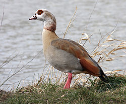
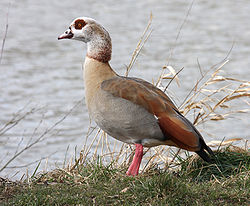

| Egyptian Goose | |
|---|---|
|  | |
| Conservation status | |
| Binomial name | |
| Alopochen aegyptiacus (Linnaeus, 1766) |
|
| Synonyms | |
|
Mascarenachen |
| Egyptian Goose | |
|---|---|
|  | |
| Conservation status | |
| Binomial name | |
| Alopochen aegyptiacus (Linnaeus, 1766) |
|
| Synonyms | |
|
Mascarenachen |
The Egyptian Goose (Alopochen aegyptiacus) is a member of the duck, goose and swan family Anatidae. It is in the shelduck subfamily Tadorninae, and is the only extant member of the genus Alopochen. mtDNA cytochrome b sequence data suggest that the relationships of Alopochen to Tadorna need further investigation (Sraml et al. 1996).
Two or three species of Alopochen from the Madagascar region have become extinct in the last 1000 years or so:
This 63–73 cm long species breeds widely in Africa except in deserts and dense forests, and is locally abundant. They are found mostly in the Nile Valley and south of the Sahara. It has also been introduced elsewhere: Great Britain, the Netherlands and Germany have self-sustaining feral populations, the British population dating back to the 18th century, though only formally added to the British list in 1971. In Britain, it is found mainly in East Anglia, in parkland with lakes. It was officially declared a pest in the UK in 2009.[1]
This is a largely terrestrial species, which will also perch readily on trees and buildings. It swims well, and in flight looks heavy, more like a goose than a duck, hence the English name.[citation needed]
This species will nest in a large variety of situations, especially in holes in mature trees in parkland. The female builds the nest from reeds, leaves and grass, and both parents take turns incubating eggs.[2] Egyptian Geese usually pair for life.
The sexes of this striking species are identical in plumage, though the males average slightly larger. There is a fair amount of variation in plumage tone, with some birds greyer and others browner, but this is not sex or age related. A large part of the wings of mature birds is white, but in repose the white is hidden by the wing coverts. When it is aroused, either in alarm or aggression, the white begins to show. In flight or when the wings are fully spread in aggression the white is conspicuous. The voices and vocalisations of the sexes differ, the male having a hoarse, subdued duck-like quack which seldom sounds unless it is aroused. The male Egyptian goose attracts its mate with an elaborate, noisy courtship display that includes honking, neck stretching and feather displays.[2] The Female has a far noisier raucous quack that frequently sounds in aggression and almost incessantly at the slightest disturbance when tending her young. Both sexes are aggressively territorial towards their own species when breeding and frequently pursue intruders into the air, attacking them in aerial "dogfights".[3]
Egyptian geese typically eat seeds, leaves, grasses, and plant stems. Occasionally, they will eat locusts, worms, or other small animals.
Egyptian geese were considered sacred by the ancient Egyptians, and appeared in much of their artwork.
The Egyptian Goose is one of the species to which the Agreement on the Conservation of African-Eurasian Migratory Waterbirds (AEWA) applies.
Its generic name looks like Greek ἀλώπηξ + χήν = "fox-goose", referring to the colour of its back, but with a Greek language error: the linguistically correct form would have been *Alopecchen or *Alopecochen.

{kind=link}
{kind=link}
{kind=link}
{kind=link}